Soru 1Cevap: A
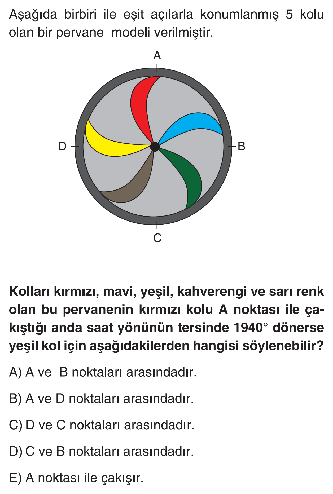
Çözüm
- $1940^\circ = 5\cdot360^\circ + 140^\circ$ → saat yönünün tersine $140^\circ$.
- 5 kol arası $72^\circ$; yeşil kol kırmızıdan saat yönünde $2\cdot72^\circ = 144^\circ$ geride: kırmızı A'dayken ($90^\circ$) yeşil $-54^\circ$'de.
- Dönüş sonunda yeşil $-54^\circ + 140^\circ = 86^\circ$ → A ($90^\circ$) ile B ($0^\circ$) arasında.
Cevap: A
Soru 2Cevap: B
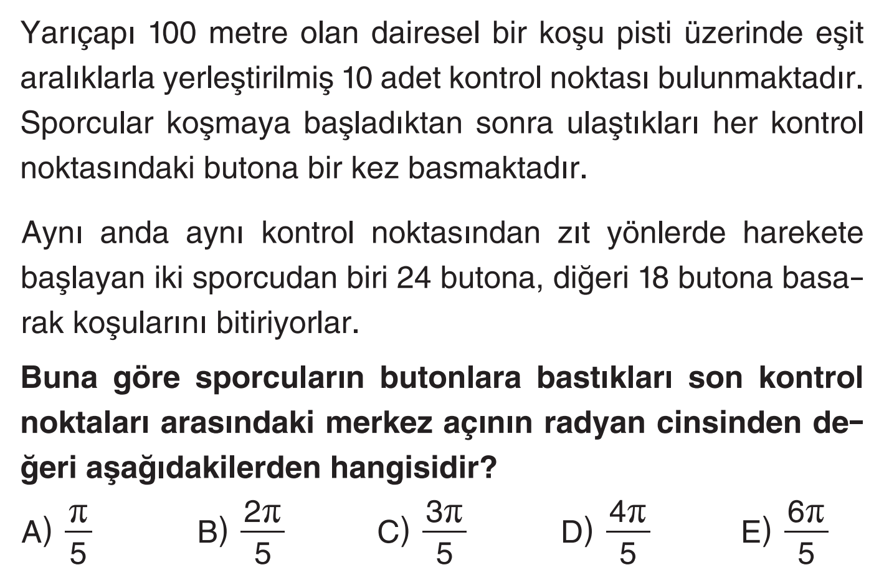
Çözüm
- 10 kontrol noktası → ardışık noktalar arası $36^\circ$.
- Birinci 24 noktaya basar: $24\cdot36^\circ = 864^\circ \to 144^\circ$; ikinci zıt yönde 18: $-648^\circ \to 72^\circ$.
- Aradaki merkez açı $144^\circ - 72^\circ = 72^\circ = \frac{2\pi}{5}$.
Cevap: B
Soru 3Cevap: C
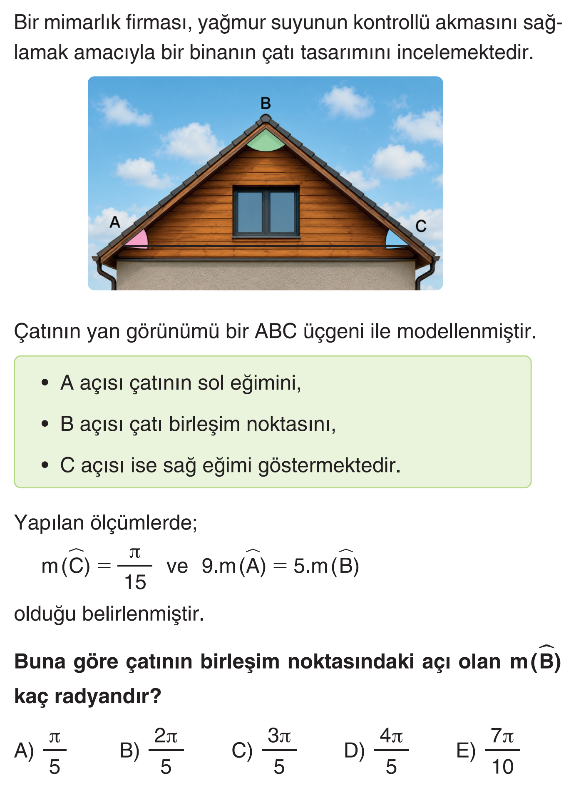
Çözüm
- $m(\hat C) = \frac{\pi}{15} = 12^\circ$ → $\hat A + \hat B = 168^\circ$.
- $9\hat A = 5\hat B$ → $\hat A = 5k$, $\hat B = 9k$; $14k = 168$ → $k = 12$.
- $\hat B = 108^\circ = \frac{3\pi}{5}$.
Cevap: C
Soru 4Cevap: A
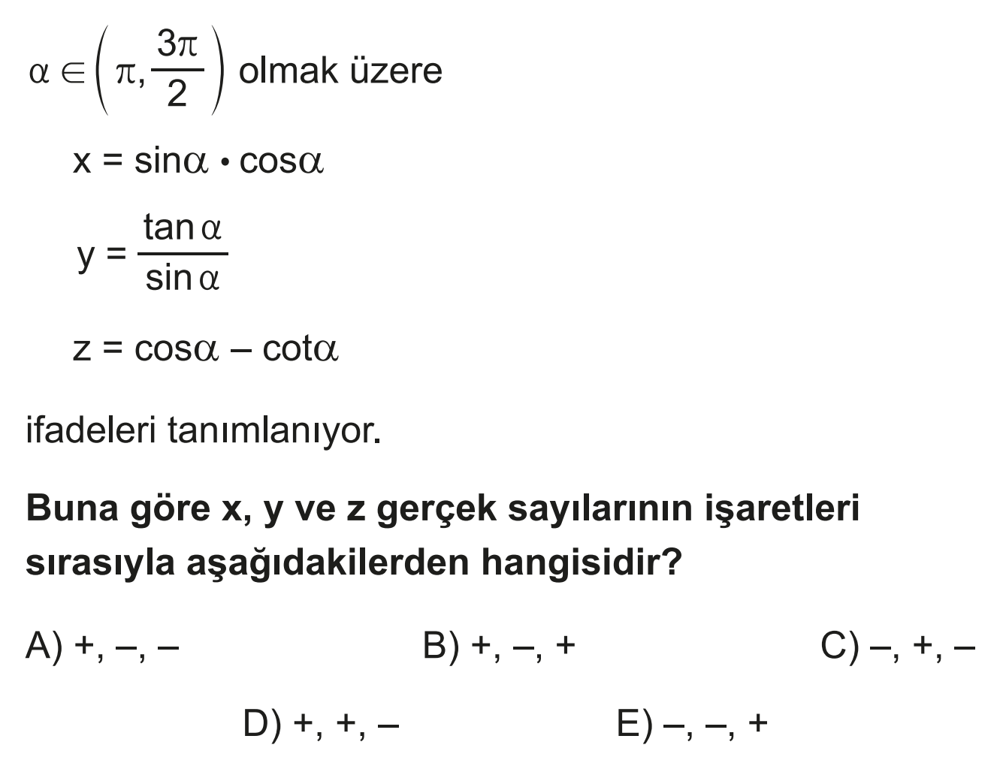
Çözüm
- $\alpha$ III. bölgede: $\sin < 0$, $\cos < 0$, $\tan > 0$, $\cot > 0$.
- $x = \sin\alpha\cos\alpha > 0$; $y = \frac{\tan\alpha}{\sin\alpha} = \frac{1}{\cos\alpha} < 0$.
- $z = \cos\alpha - \cot\alpha < 0$. İşaretler $+, -, -$.
Cevap: A
Soru 5Cevap: C
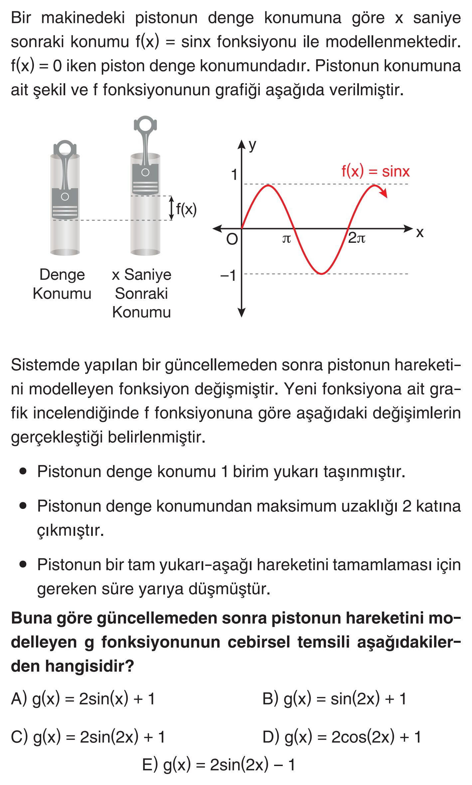
Çözüm
- Denge konumu 1 yukarı → $+1$.
- Maksimum uzaklık 2 katı → genlik 2: $2\sin(\dots)$.
- Periyot yarıya → $x$ katsayısı 2: $g(x) = 2\sin(2x) + 1$.
Cevap: C
Soru 6Cevap: A
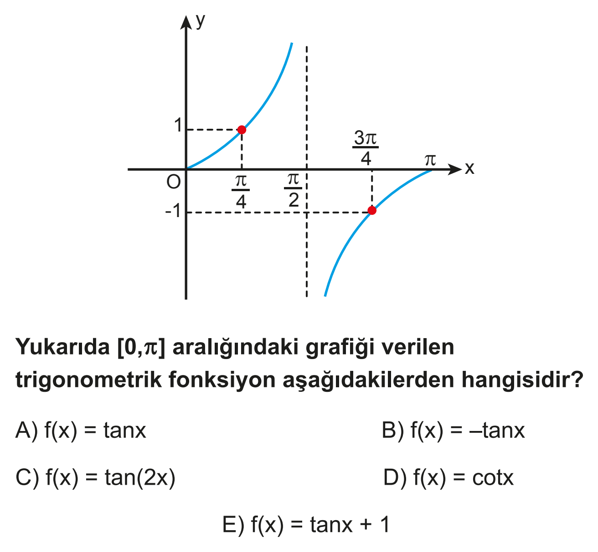
Çözüm
- Grafik $(0,0)$'dan geçiyor, $x = \frac{\pi}{2}$'de asimptot var, artan.
- $f\left(\frac{\pi}{4}\right) = 1$, $f\left(\frac{3\pi}{4}\right) = -1$.
- Bu özellikler $\tan x$'e aittir.
Cevap: A
Soru 7Cevap: E
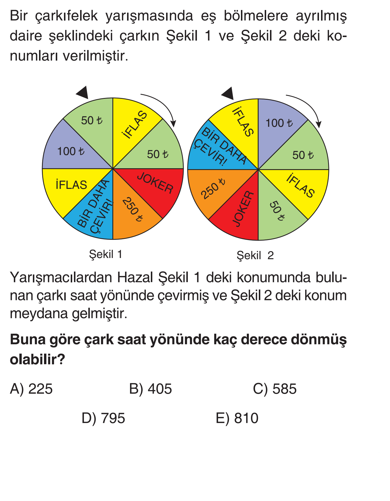
Çözüm
- Çark 8 eş bölme ($45^\circ$); Şekil 1 ile Şekil 2 karşılaştırılınca bölmeler saat yönünde $90^\circ$ kaymıştır.
- Saat yönünde dönüş $90^\circ + k\cdot360^\circ$ olmalı.
- Seçeneklerde $810^\circ = 2\cdot360^\circ + 90^\circ$ var.
Cevap: E
Soru 8Cevap: C
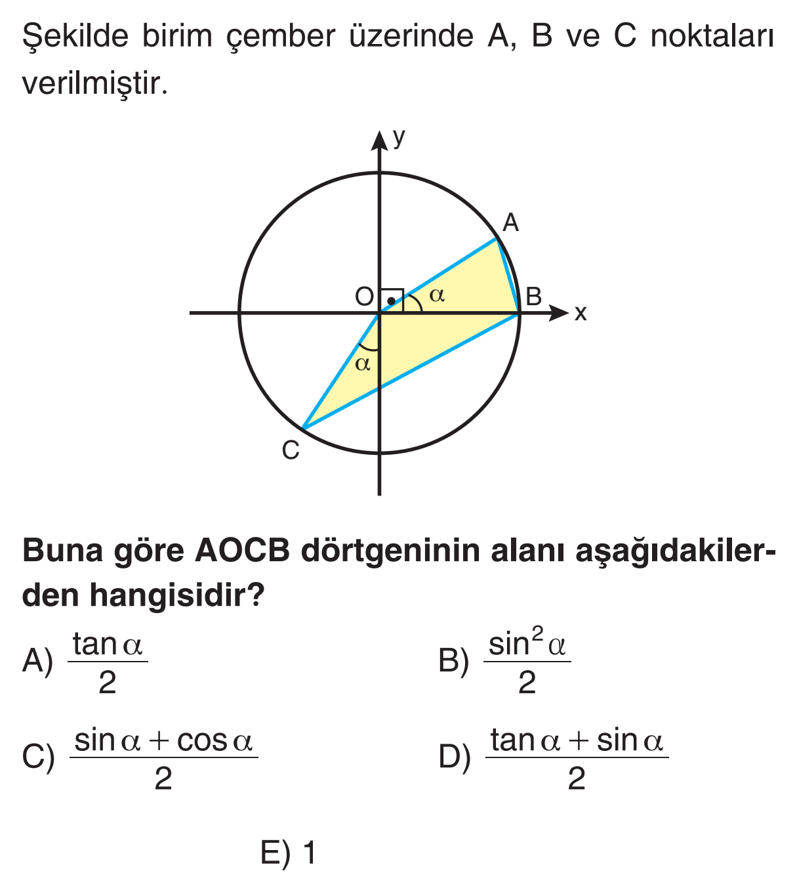
Çözüm
- $[OA]$ ve $[OC]$ birim yarıçap; $\widehat{AOB} = \alpha$ ve $[OA]\perp[OC]$ gibi şekildeki ilişkiler kullanılır.
- $A(AOCB) = A(AOB) + A(BOC) = \frac12\sin\alpha + \frac12\cos\alpha$ (iki üçgenin alanı, kenarlar 1).
- Alan $\frac{\sin\alpha + \cos\alpha}{2}$.
Cevap: C
Soru 9Cevap: B
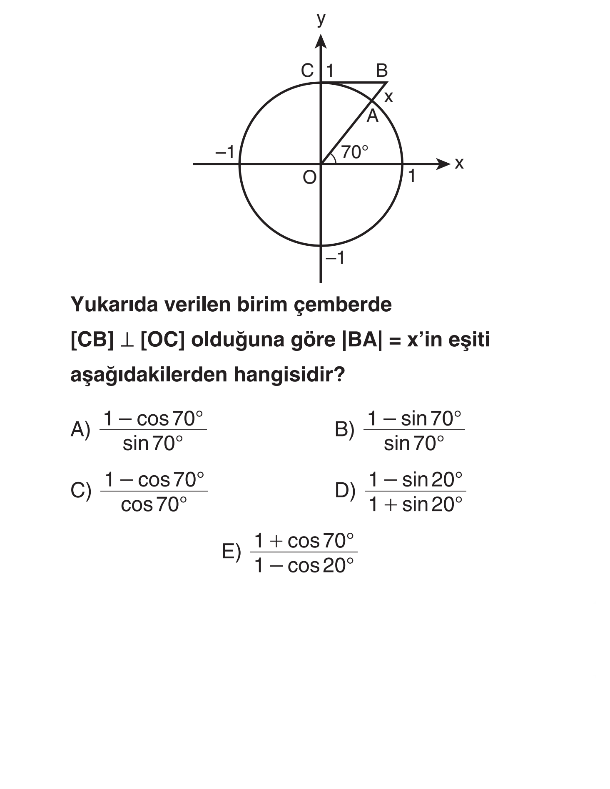
Çözüm
- $A(\cos70^\circ, \sin70^\circ)$; $C(0,1)$, $[CB]\perp[OC]$ → B, $y = 1$ doğrusu üzerinde ve O, A, B doğrusal.
- $|OB| = \frac{1}{\sin70^\circ}$ (OCB dik üçgeni, $\widehat{COB} = 20^\circ$).
- $|BA| = |OB| - 1 = \frac{1 - \sin70^\circ}{\sin70^\circ}$.
Cevap: B
Soru 10Cevap: C
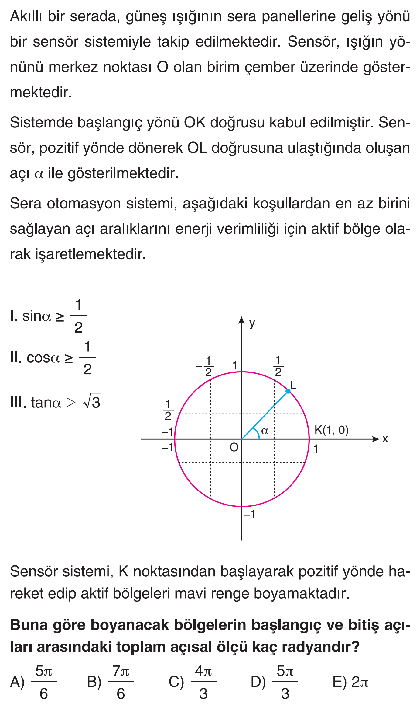
Çözüm
- I: $\sin\alpha \ge \frac12$ → $\left[\frac{\pi}{6},\frac{5\pi}{6}\right]$; II: $\cos\alpha \ge \frac12$ → $\left[0,\frac{\pi}{3}\right]\cup\left[\frac{5\pi}{3},2\pi\right)$.
- III: $\tan\alpha > \sqrt3$ → $\left(\frac{\pi}{3},\frac{\pi}{2}\right)\cup\left(\frac{4\pi}{3},\frac{3\pi}{2}\right)$.
- Birleşim: $\left[0,\frac{5\pi}{6}\right]$, $\left(\frac{4\pi}{3},\frac{3\pi}{2}\right)$, $\left[\frac{5\pi}{3},2\pi\right)$ → toplam $\frac{5\pi}{6} + \frac{\pi}{6} + \frac{\pi}{3} = \frac{4\pi}{3}$.
Cevap: C
Soru 11Cevap: A
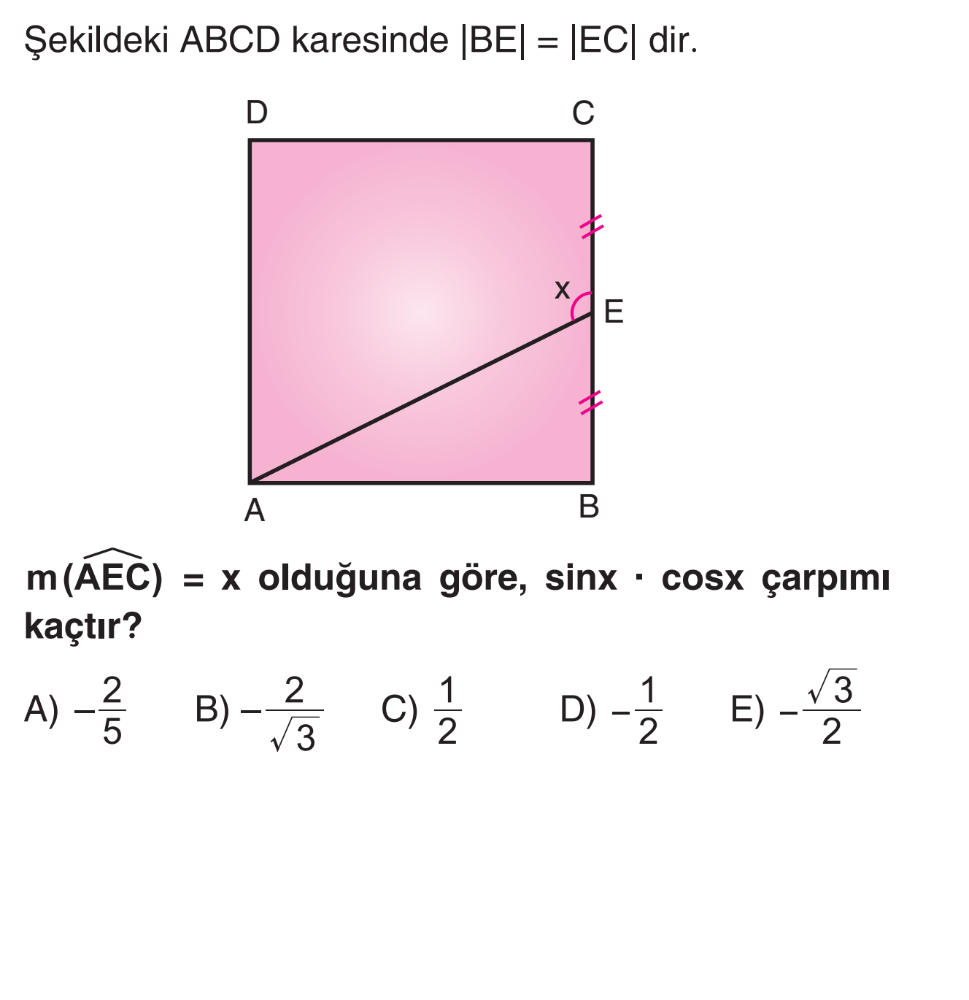
Çözüm
- Kare kenarı 2 alalım: $|BE| = |EC| = 1$, $|AB| = 2$ → $\tan(\widehat{AEB}) = 2$.
- $x = \widehat{AEC} = 180^\circ - \widehat{AEB}$ → $\tan x = -2$.
- $\sin x\cos x = \frac{\tan x}{1 + \tan^2x} = \frac{-2}{5}$.
Cevap: A
Soru 12Cevap: C
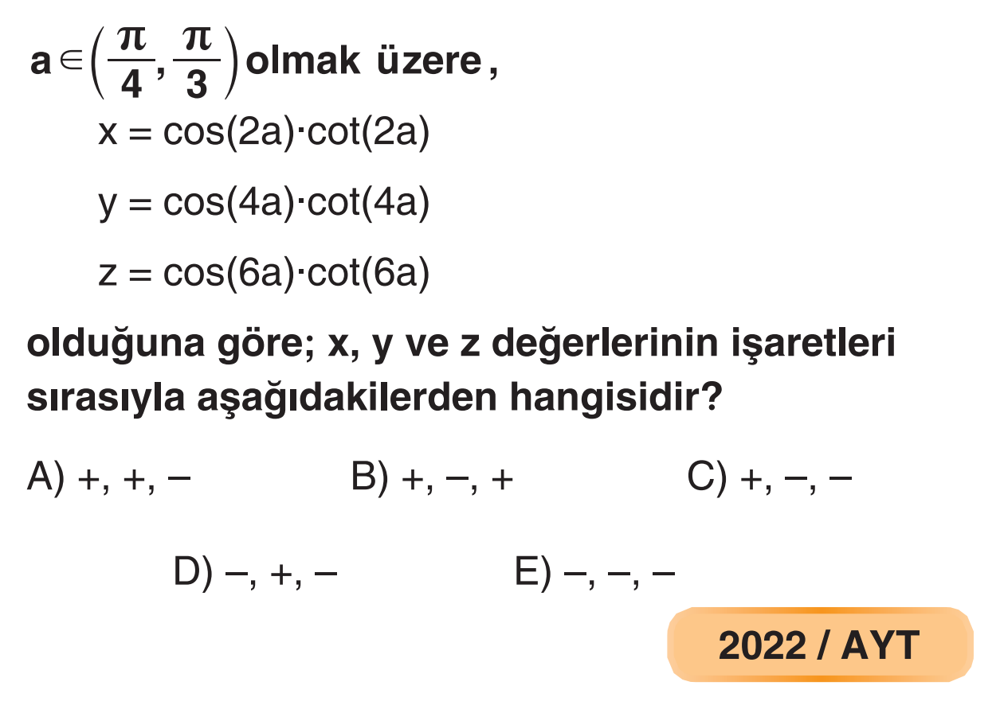
Çözüm
- $a\in\left(\frac{\pi}{4},\frac{\pi}{3}\right)$: $2a\in\left(\frac{\pi}{2},\frac{2\pi}{3}\right)$ → $\cos < 0$, $\cot < 0$ → $x > 0$.
- $4a\in\left(\pi,\frac{4\pi}{3}\right)$ → $\cos < 0$, $\cot > 0$ → $y < 0$.
- $6a\in\left(\frac{3\pi}{2},2\pi\right)$ → $\cos > 0$, $\cot < 0$ → $z < 0$. $+, -, -$.
Cevap: C
Soru 13Cevap: B
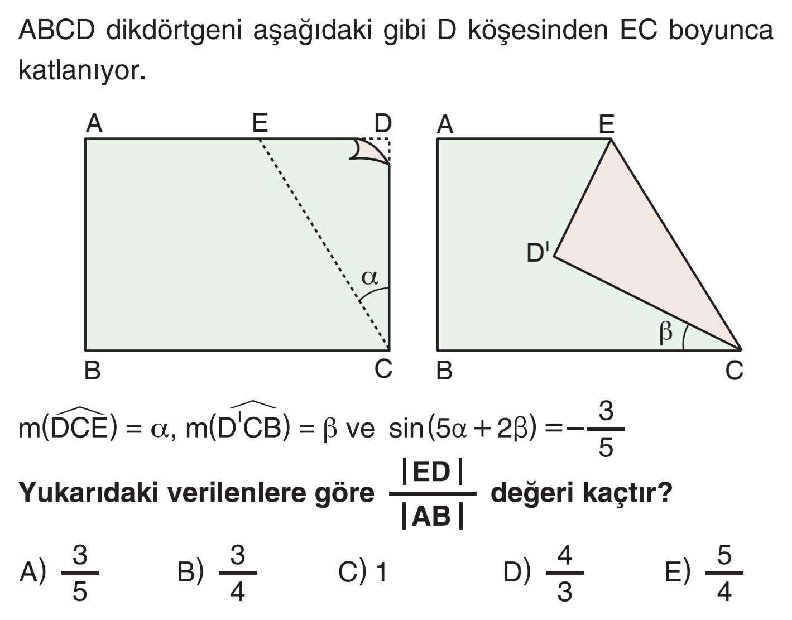
Çözüm
- Katlamada $\widehat{DCE} = \widehat{ECD'} = \alpha$ ve $\widehat{BCD} = 90^\circ$ → $2\alpha + \beta = 90^\circ$.
- $\sin(5\alpha + 2\beta) = \sin(\alpha + 180^\circ) = -\sin\alpha = -\frac35$ → $\sin\alpha = \frac35$, $\tan\alpha = \frac34$.
- EDC dik üçgeninde $\tan\alpha = \frac{|ED|}{|DC|}$ ve $|DC| = |AB|$ → $\frac{|ED|}{|AB|} = \frac34$.
Cevap: B
Soru 14Cevap: A
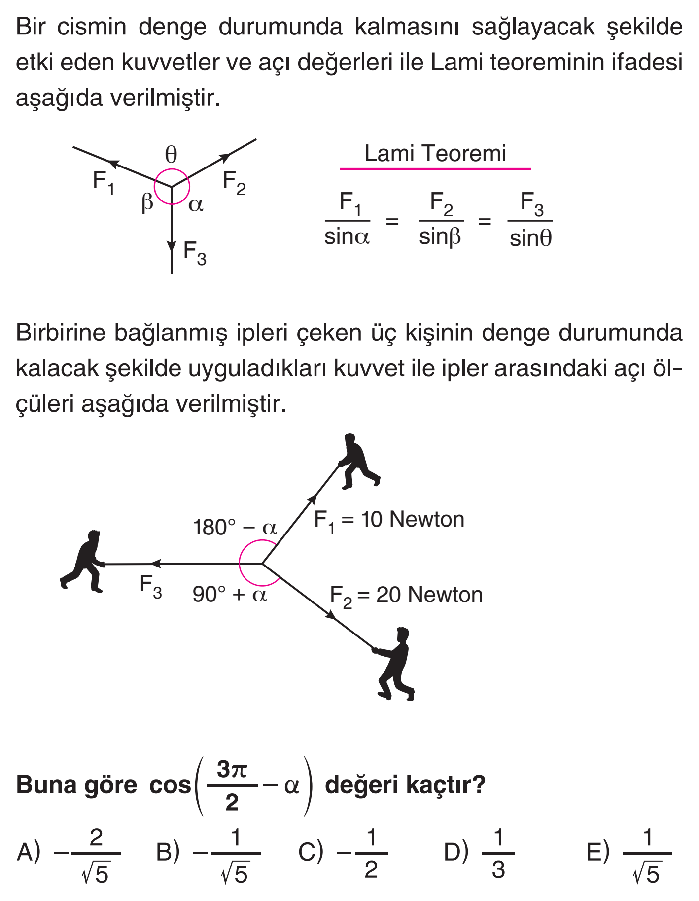
Çözüm
- Lami: $\frac{F_1}{\sin(90^\circ + \alpha)} = \frac{F_2}{\sin(180^\circ - \alpha)}$ → $\frac{10}{\cos\alpha} = \frac{20}{\sin\alpha}$.
- $\tan\alpha = 2$ → $\sin\alpha = \frac{2}{\sqrt5}$.
- $\cos\left(\frac{3\pi}{2} - \alpha\right) = -\sin\alpha = -\frac{2}{\sqrt5}$.
Cevap: A
Soru 15Cevap: E
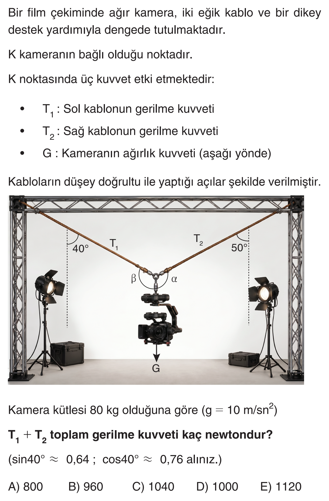
Çözüm
- Kablo-düşey açıları $40^\circ$ ve $50^\circ$; aralarındaki açı $90^\circ$. G $= 800$ N.
- Lami ile: $\frac{T_1}{\sin(180^\circ - 50^\circ)} = \frac{T_2}{\sin(180^\circ - 40^\circ)} = \frac{G}{\sin90^\circ}$ → $T_1 = 800\cdot\sin50^\circ = 800\cdot0{,}76$, $T_2 = 800\cdot0{,}64$.
- $T_1 + T_2 = 800\cdot1{,}40 = 1120$ N.
Cevap: E
Soru 16Cevap: D
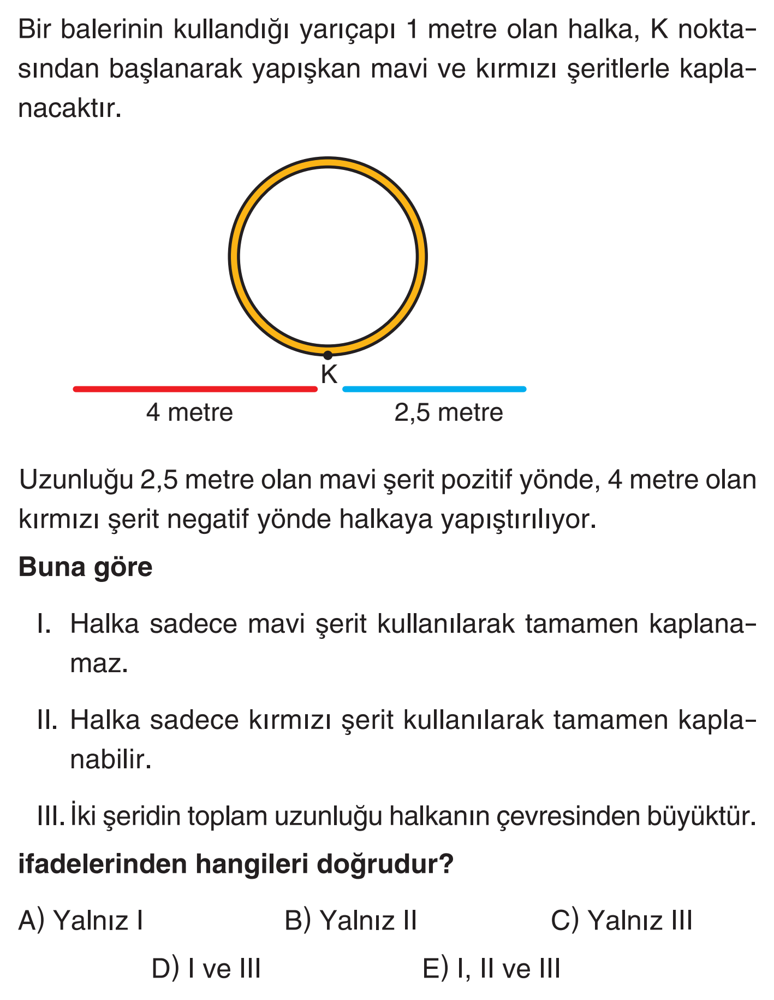
Çözüm
- Halkanın çevresi $2\pi\cdot1 \approx 6{,}28$ m.
- Mavi 2,5 m < 6,28 → tek başına kaplayamaz ✓ (I); kırmızı 4 m < 6,28 → kaplayamaz ✗ (II).
- $2{,}5 + 4 = 6{,}5 > 6{,}28$ ✓ (III). I ve III.
Cevap: D
Soru 17Cevap: D
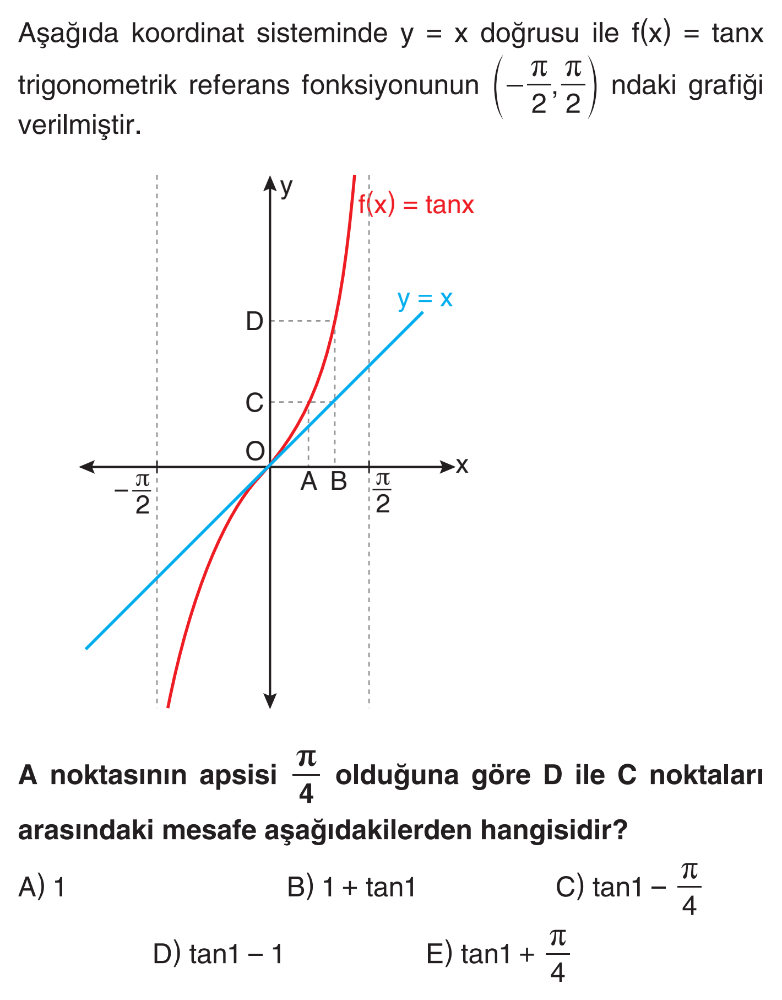
Çözüm
- A'nın apsisi $\frac{\pi}{4}$ → $f\left(\frac{\pi}{4}\right) = 1$ → C noktası $(0,1)$.
- $y = x$ doğrusunda ordinatı 1 olan noktanın apsisi 1 → B$(1,0)$ ve D $(0, \tan1)$.
- $|DC| = \tan1 - 1$.
Cevap: D
Soru 18Cevap: B
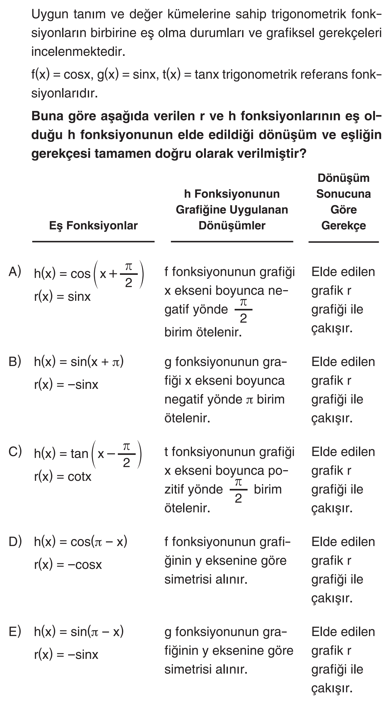
Çözüm
- $\sin(x + \pi) = -\sin x = r(x)$ ✓; $h$, $g = \sin x$ grafiğinin x ekseninde negatif yönde $\pi$ ötelenmesidir ✓.
- A: $\cos\left(x + \frac{\pi}{2}\right) = -\sin x \ne \sin x$; C: $\tan\left(x - \frac{\pi}{2}\right) = -\cot x$; E: $\sin(\pi - x) = \sin x \ne -\sin x$.
- D: $\cos(\pi - x) = -\cos x$ eşit ama dönüşüm (y eksenine göre simetri) yanlış. Doğru: B.
Cevap: B
Soru 19Cevap: E
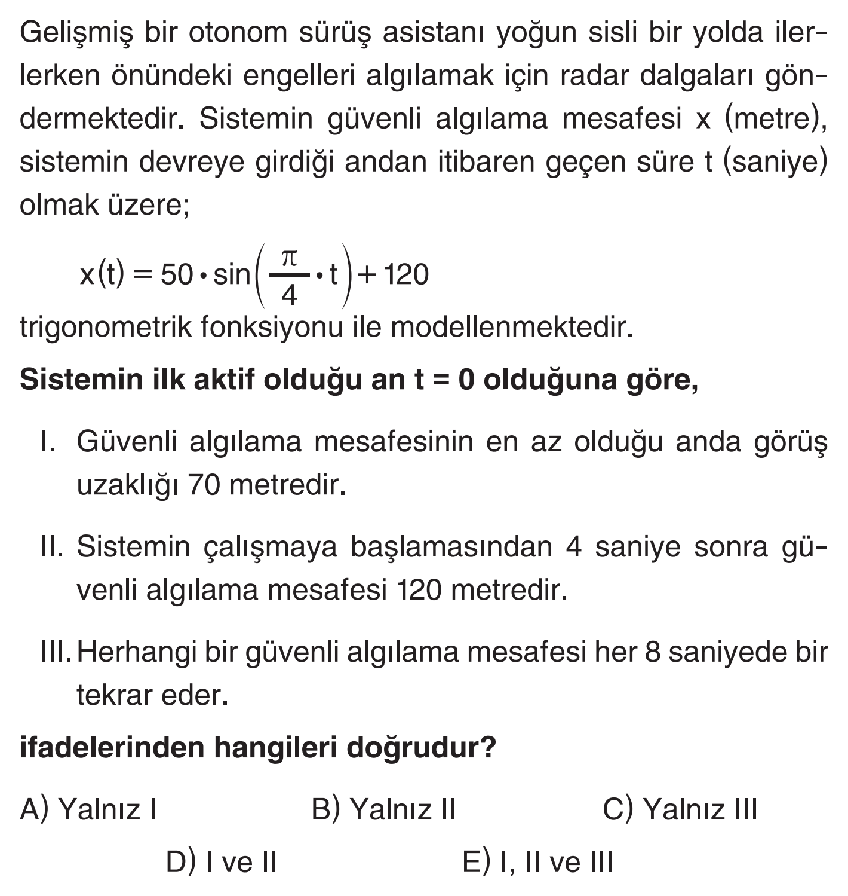
Çözüm
- $-1 \le \sin \le 1$ → $70 \le x(t) \le 170$: en az 70 m ✓ (I).
- $x(4) = 50\sin\pi + 120 = 120$ ✓ (II).
- Periyot $\frac{2\pi}{\pi/4} = 8$ sn ✓ (III). I, II ve III.
Cevap: E
Soru 20Cevap: C
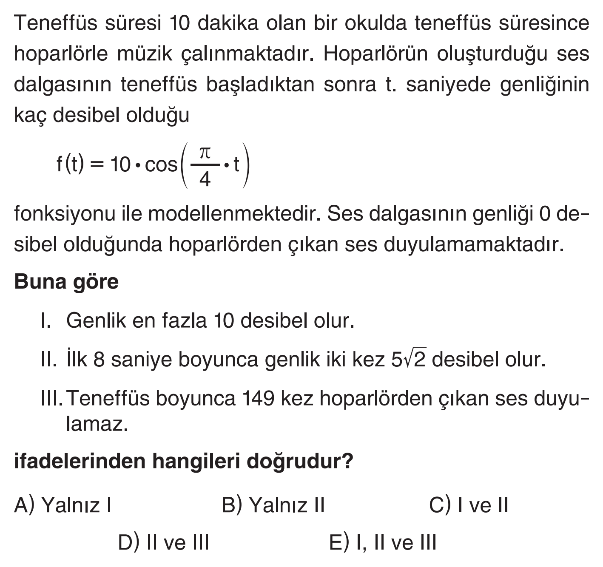
Çözüm
- $-10 \le f(t) \le 10$ → en fazla 10 dB ✓ (I).
- $10\cos\frac{\pi t}{4} = 5\sqrt2$ → $\cos = \frac{\sqrt2}{2}$ → $t = 1$ ve $t = 7$ (ilk 8 sn'de iki kez) ✓ (II).
- $f = 0$ ⇔ $t = 2 + 4k$; 600 sn'de $k = 0, …, 149$ → 150 kez ✗ (III). I ve II.
Cevap: C
Soru 21Cevap: B
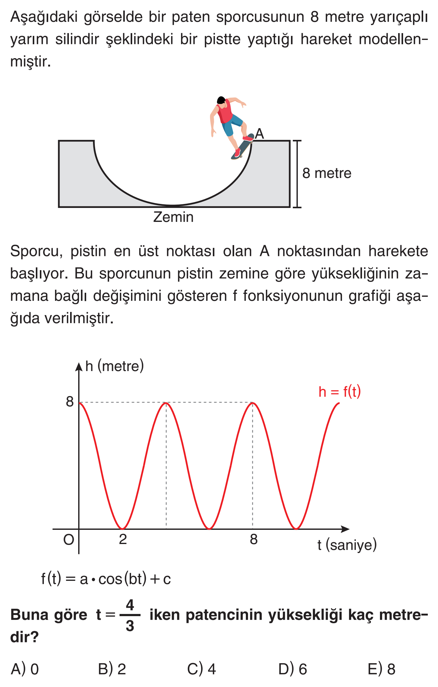
Çözüm
- Grafik: $t = 0$'da 8 (maksimum), $t = 2$'de 0 (minimum) → $a = 4$, $c = 4$, periyot 4 → $b = \frac{\pi}{2}$.
- $f(t) = 4\cos\frac{\pi t}{2} + 4$.
- $f\left(\frac43\right) = 4\cos\frac{2\pi}{3} + 4 = -2 + 4 = 2$ m.
Cevap: B
Soru 22Cevap: A
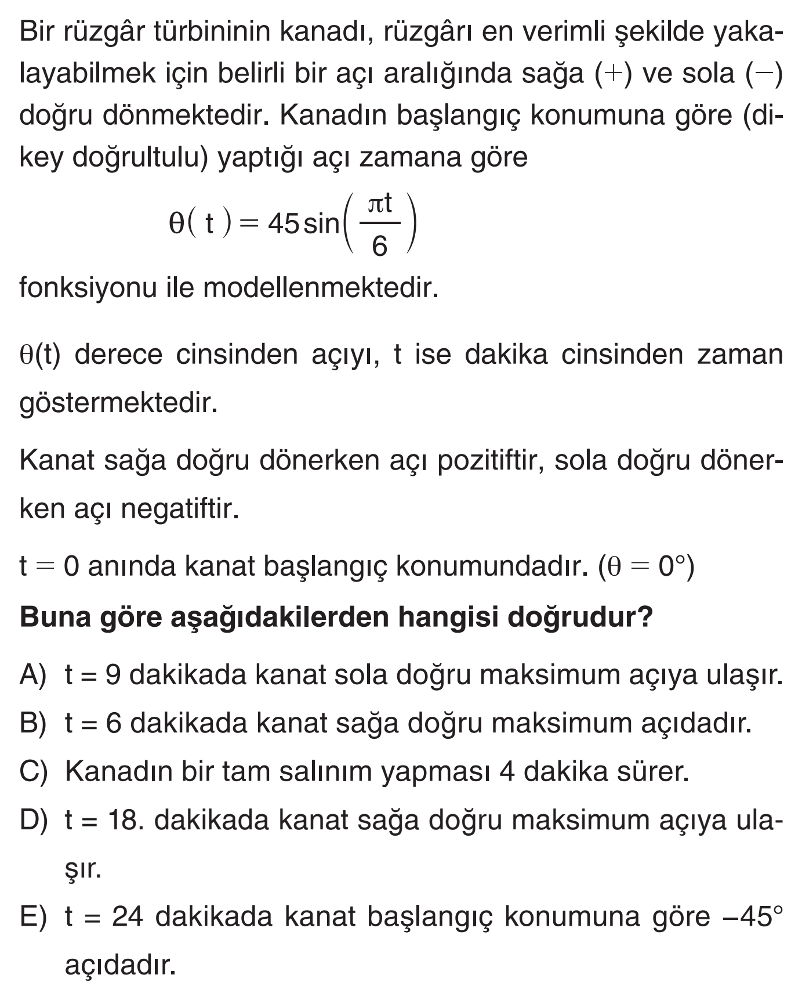
Çözüm
- Periyot $\frac{2\pi}{\pi/6} = 12$ dk; $\theta(t) = 45\sin\frac{\pi t}{6}$.
- $\theta(9) = 45\sin\frac{3\pi}{2} = -45^\circ$ → sola doğru maksimum ✓ (A).
- $\theta(6) = 0$, salınım 12 dk, $\theta(18) = -45^\circ$, $\theta(24) = 0$ → diğerleri yanlış.
Cevap: A
Soru 23Cevap: C
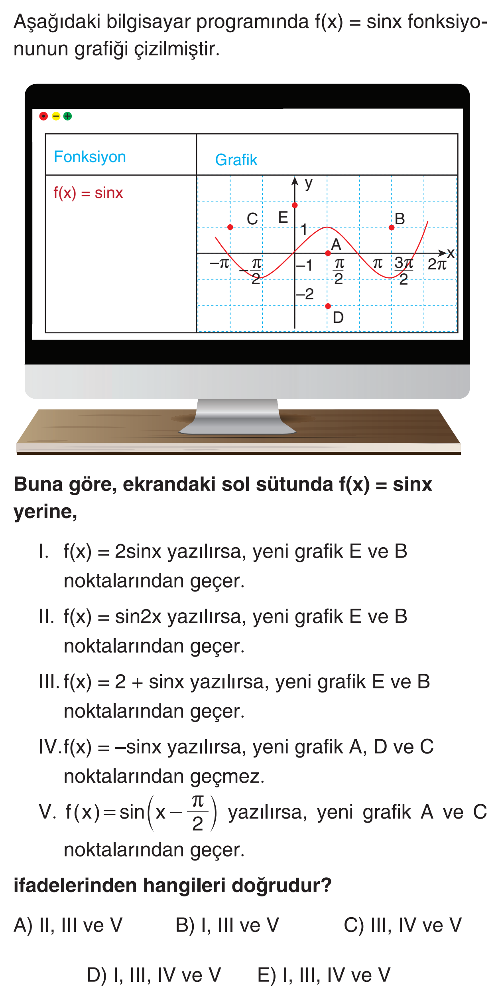
Çözüm
- Izgaradan: $C(-\pi,1)$, $E(0,2)$, $A\left(\frac{\pi}{2},0\right)$, $D\left(\frac{\pi}{2},-2\right)$, $B\left(\frac{3\pi}{2},1\right)$.
- I: $2\sin0 = 0 \ne 2$ ✗; II: $\sin0 = 0 \ne 2$ ✗; III: $2+\sin0 = 2$ (E), $2+\sin\frac{3\pi}{2} = 1$ (B) ✓.
- IV: $-\sin x$ A'da $-1$, D'de $-1$, C'de $0$ verir; hiçbirinden geçmez ✓. V: $\sin\left(x-\frac{\pi}{2}\right) = -\cos x$: A'da 0, C'de 1 ✓. III, IV ve V.
Cevap: C
Soru 24Cevap: D
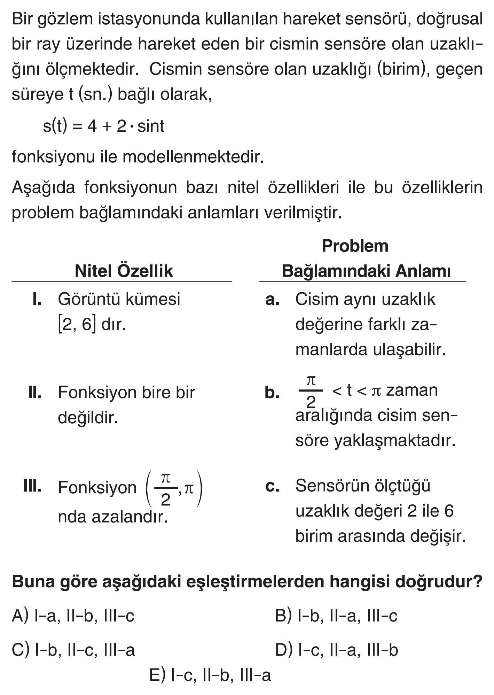
Çözüm
- I. görüntü kümesi $[2,6]$ → uzaklık 2 ile 6 arasında değişir (c).
- II. bire bir değil → aynı uzaklığa farklı zamanlarda ulaşılır (a).
- III. $\left(\frac{\pi}{2},\pi\right)$'de azalan → bu aralıkta cisim sensöre yaklaşır (b). I-c, II-a, III-b.
Cevap: D
Soru 25Cevap: C
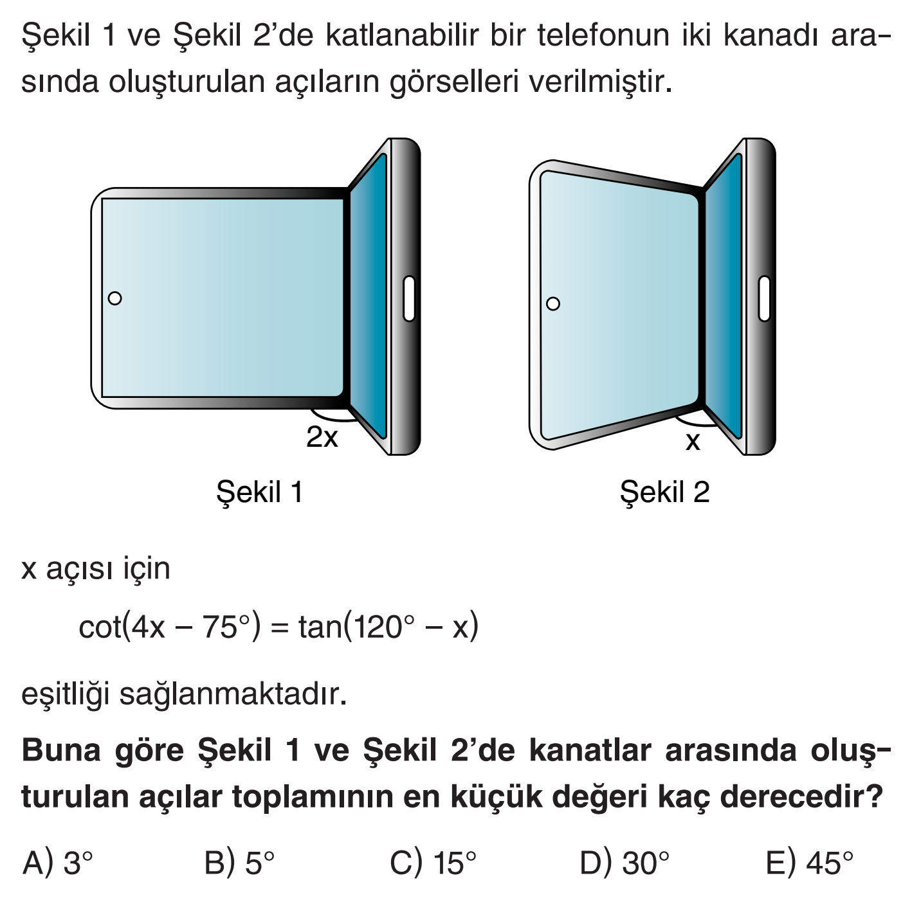
Çözüm
- $\tan(120^\circ - x) = \cot(x - 30^\circ)$ → $\cot(4x - 75^\circ) = \cot(x - 30^\circ)$.
- $4x - 75^\circ = x - 30^\circ + k\cdot180^\circ$ → $x = 15^\circ + k\cdot60^\circ$.
- Açılar toplamı $2x + x = 3x$; en küçük pozitif $x = 15^\circ$ için $45^\circ$.
Cevap: C
Soru 26Cevap: D
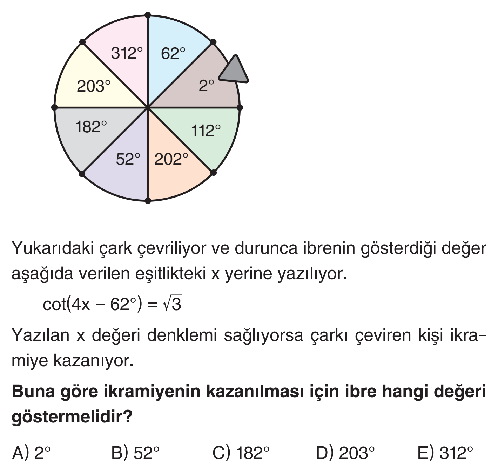
Çözüm
- $\cot30^\circ = \sqrt3$ → $4x - 62^\circ = 30^\circ + k\cdot180^\circ$.
- $x = 23^\circ + k\cdot45^\circ$: $23^\circ, 68^\circ, 113^\circ, 158^\circ, 203^\circ, …$
- Çarktaki değerlerden yalnız $203^\circ$ uyar.
Cevap: D
Soru 27Cevap: C
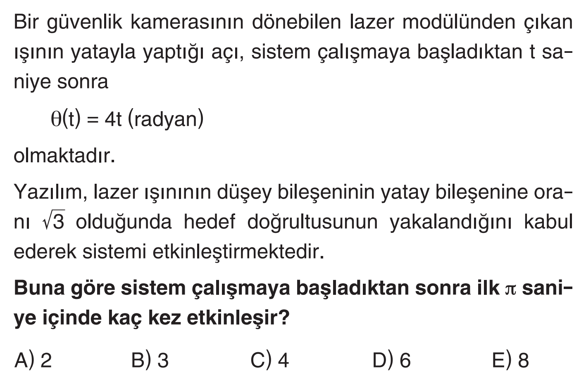
Çözüm
- Düşey/yatay bileşen oranı $\tan\theta = \sqrt3$ → $4t = \frac{\pi}{3} + k\pi$.
- $0 < t \le \pi$ → $0 < 4t \le 4\pi$: $\frac{\pi}{3}, \frac{4\pi}{3}, \frac{7\pi}{3}, \frac{10\pi}{3}$.
- 4 kez etkinleşir.
Cevap: C
Soru 28Cevap: C
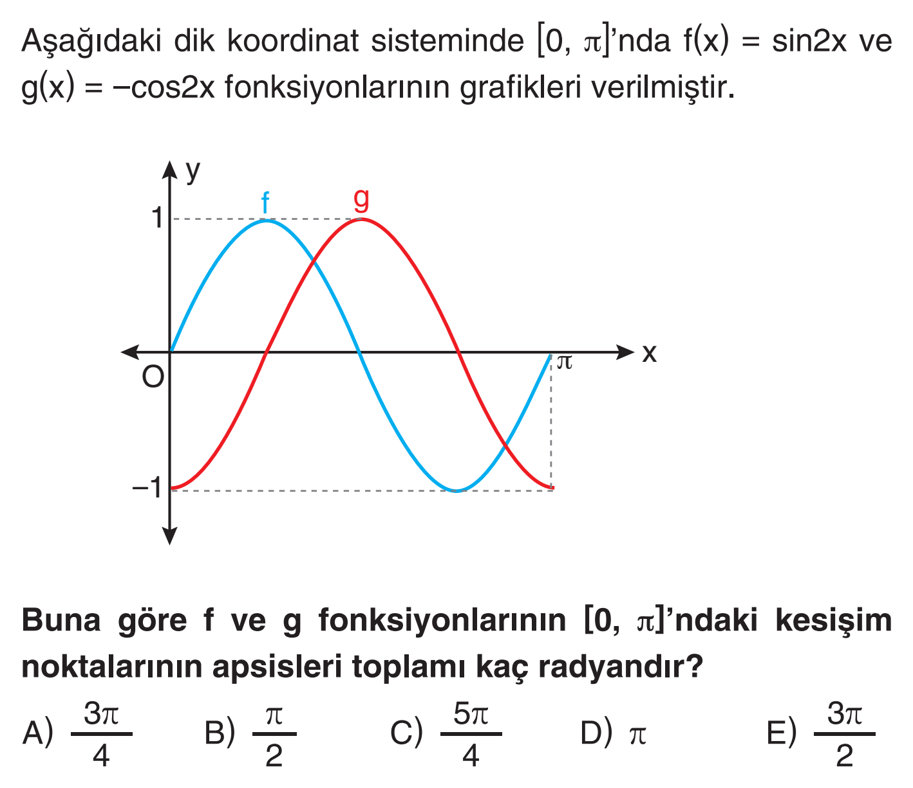
Çözüm
- $\sin2x = -\cos2x$ → $\tan2x = -1$.
- $2x\in[0,2\pi]$: $\frac{3\pi}{4}, \frac{7\pi}{4}$ → $x = \frac{3\pi}{8}, \frac{7\pi}{8}$.
- Toplam $\frac{10\pi}{8} = \frac{5\pi}{4}$.
Cevap: C
Soru 29Cevap: D
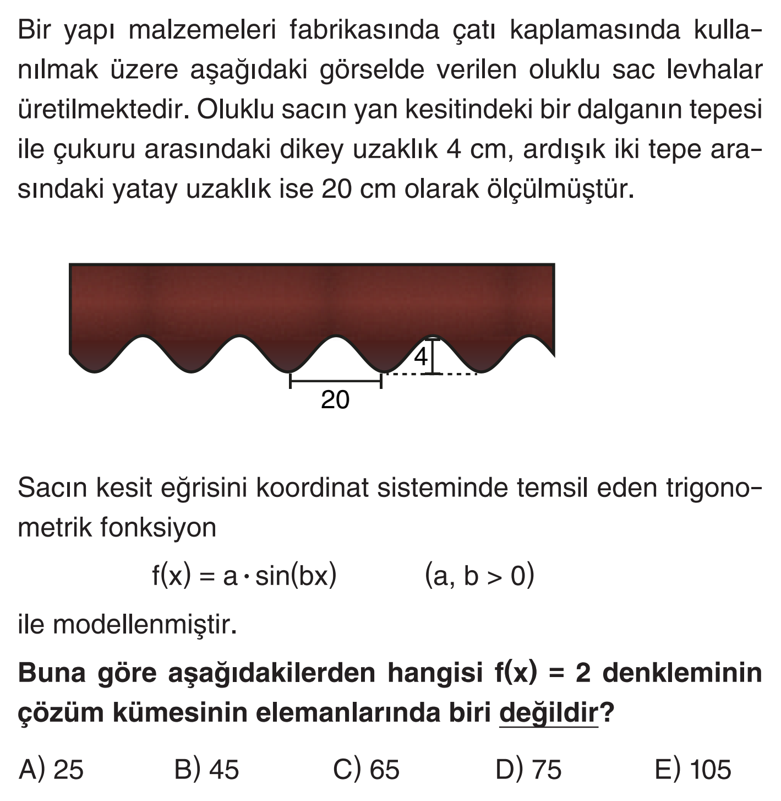
Çözüm
- Tepe–çukur 4 cm → $a = 2$; ardışık tepeler arası 20 cm → periyot 20 → $b = \frac{2\pi}{20} = \frac{\pi}{10}$.
- $2\sin\frac{\pi x}{10} = 2$ → $\frac{\pi x}{10} = \frac{\pi}{2} + 2k\pi$ → $x = 5 + 20k$.
- Çözümler $5, 25, 45, 65, 85, 105, …$; 75 değildir.
Cevap: D
Soru 30Cevap: C
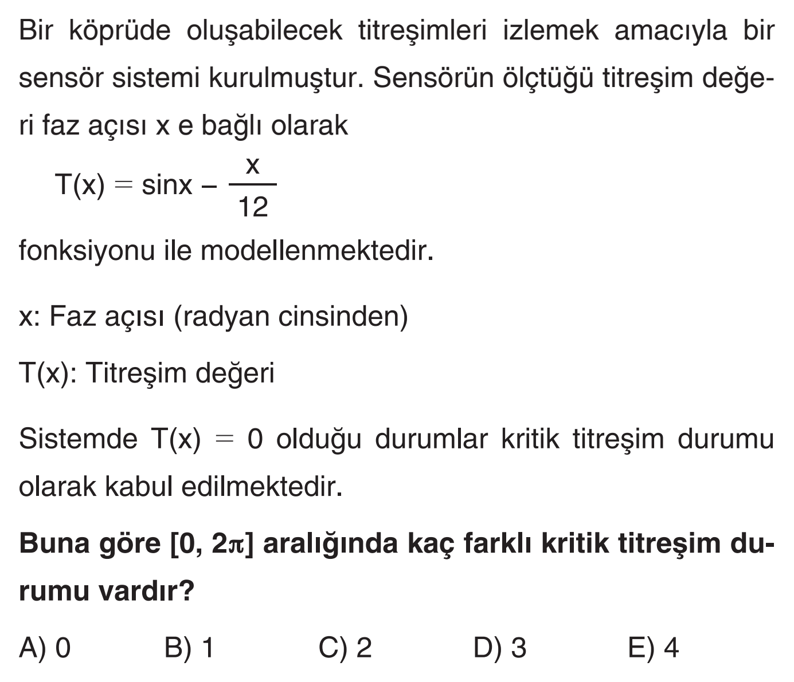
Çözüm
- $T(x) = 0$ ⇔ $\sin x = \frac{x}{12}$: sinüs eğrisi ile $y = \frac{x}{12}$ doğrusunun kesişimleri.
- $[0,2\pi]$'de doğru 0'dan $\frac{\pi}{6}\approx0{,}52$'ye çıkar; $x = 0$'da ve $(0,\pi)$'de sinüs tepesinin sağ inişinde kesişir.
- $(\pi, 2\pi)$'de $\sin x < 0 < \frac{x}{12}$ → kesişim yok. Toplam 2.
Cevap: C